6 Inference for Means and Proportions
6.1 Distribution of a Sample Proportion
When sampling distributions, bootstrap distributions, and randomization distributions are well approximated by normal distributions, and when we have a way of computing the standard error, we can use normal distributions to compute confidence intervals and p-values using the following general templates:
confidence interval: \[ \mbox{statistic} \pm \mbox{critical value} \cdot SE \]
hypothesis testing: \[ \mbox{test statistic} = \frac{ \mbox{statistic} - \mbox{null parameter}} { SE } \]
Example 6.1
SE <- sqrt(0.25 *(1 - 0.25) / 50); SE## [1] 0.06123724SE <- sqrt(0.25 *(1 - 0.25) / 200); SE## [1] 0.03061862SE <- sqrt(0.4 *(1 - 0.4) / 50); SE## [1] 0.06928203How Large a Sample Size is Needed?
Figure 6.2
P.05 <- do(2000) * rflip(50, .05)
gf_dotplot(~prop, binwidth = .01, dotsize = .02, data = P.05)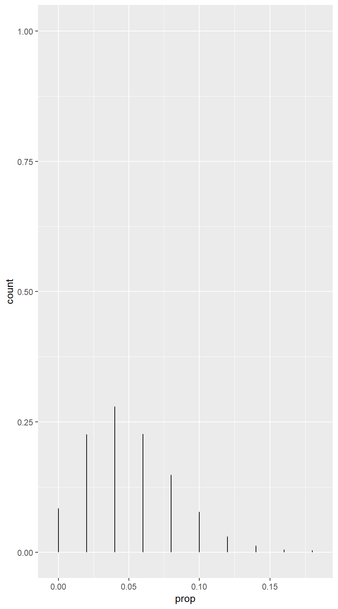
P.10 <- do(2000) * rflip(50, .10)
gf_dotplot(~prop, binwidth = .01, dotsize = .04, data = P.10)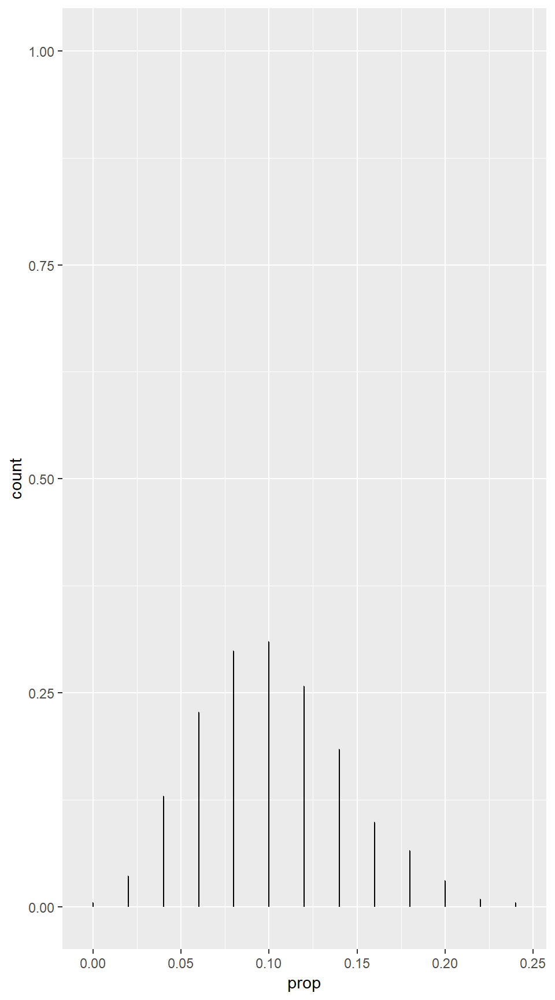
P.25 <- do(2000) * rflip(50, .25)
gf_dotplot(~prop, binwidth = .01, dotsize = .08, data = P.25)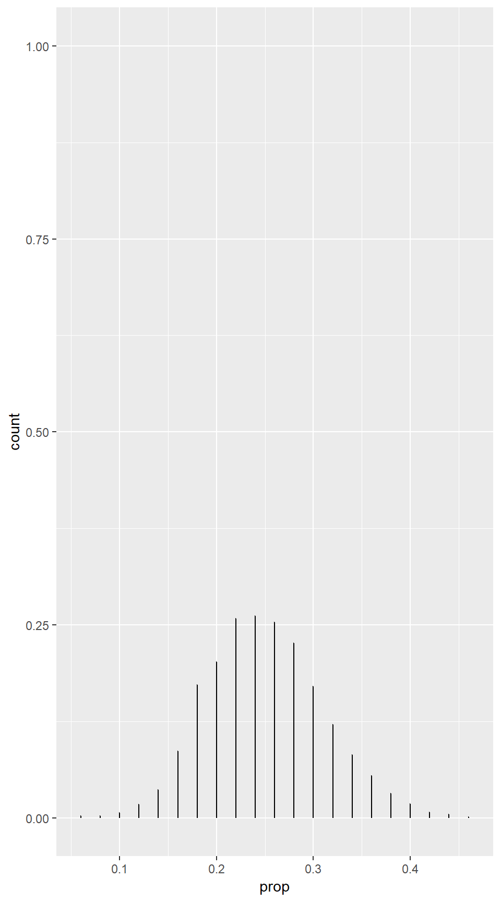
P.50 <- do(2000) * rflip(50, .50)
gf_dotplot(~prop, binwidth = .01, dotsize = .1, data = P.50)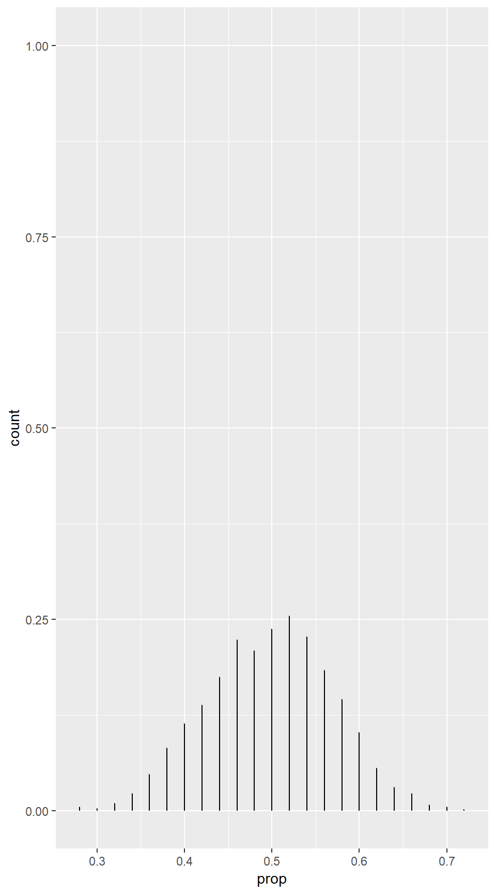
P.90 <- do(2000) * rflip(50, .90)
gf_dotplot(~prop, binwidth = .01, dotsize = .03, data = P.90)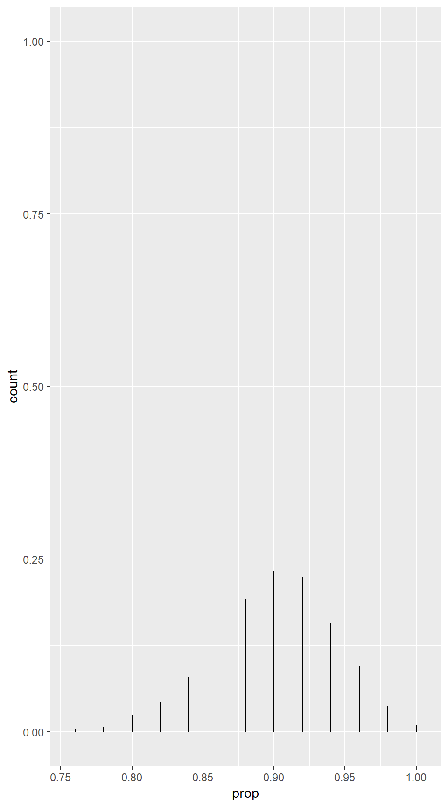
P.99 <- do(2000) * rflip(50, .99)
gf_dotplot(~prop, binwidth = .01, dotsize = .004, data = P.99)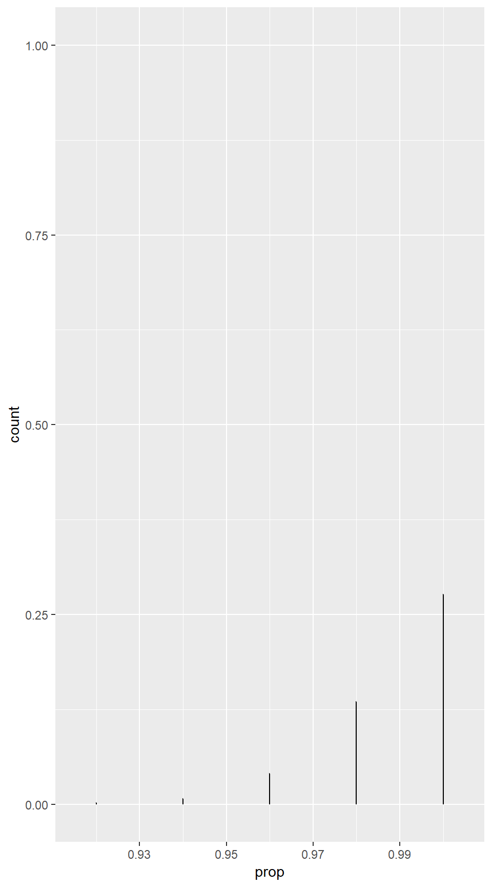
Figure 6.3
n10 <- do(2000) * rflip(10, .10)
gf_dotplot(~prop, binwidth = .02, dotsize = .018, data = n10)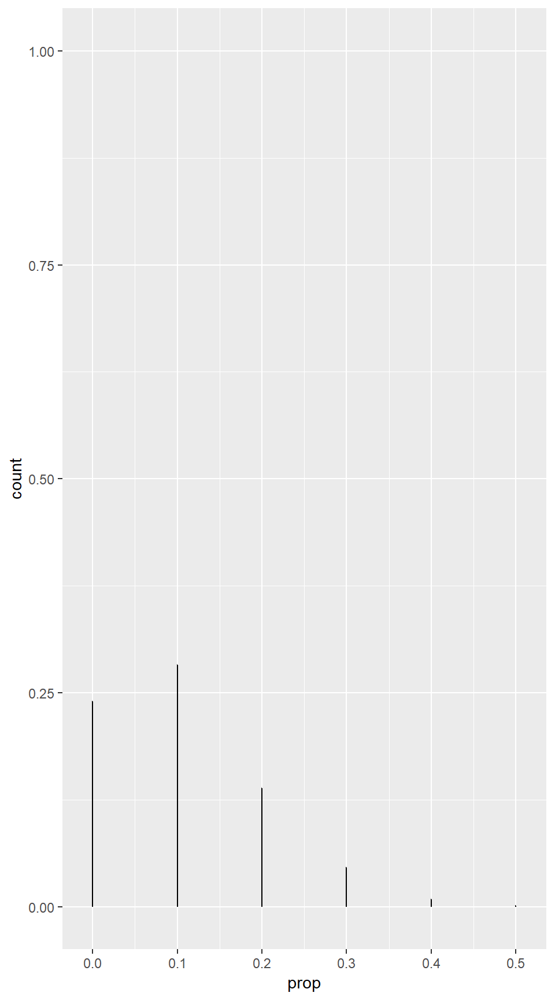
n25 <- do(2000) * rflip(25, .10)
gf_dotplot(~prop, binwidth = .03, dotsize = .013, data = n25)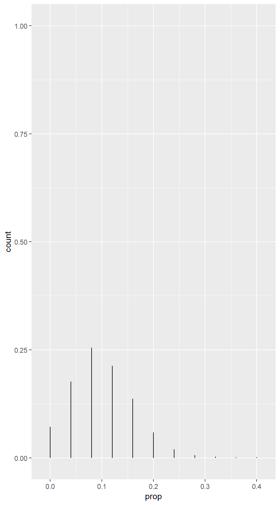
n200 <- do(2000) * rflip(200, .10)
gf_dotplot(~prop, binwidth = .006, dotsize = .03, data = n200)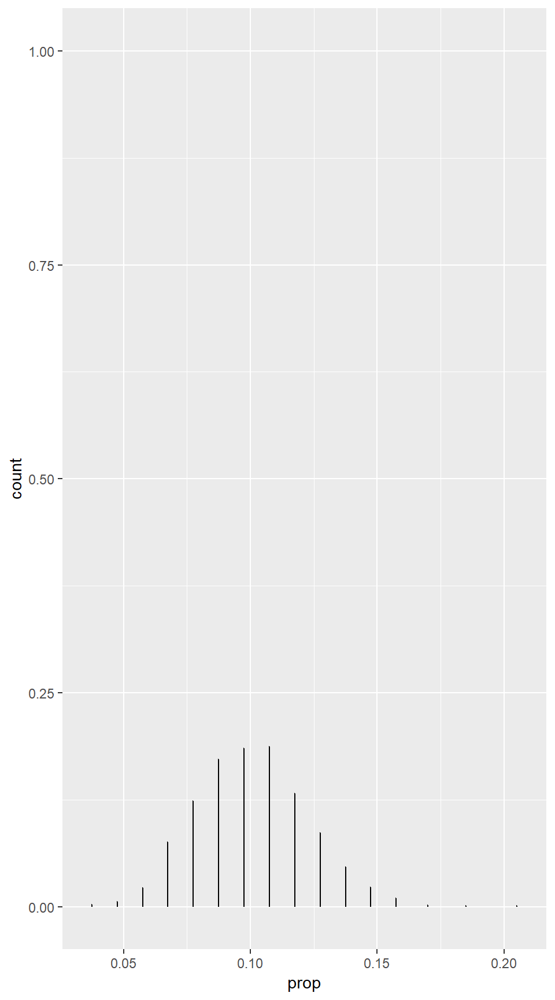
Example 6.2
p.hat <- 0.80; p.hat## [1] 0.8p.hat * 400 # check >= 10## [1] 320(1 - p.hat) * 400 # check >= 10## [1] 80SE <- sqrt(.80 * .20 / 400); SE## [1] 0.02Figure 6.4
gf_fun(dnorm(x,0.80,0.02) ~ x, xlim = c(0.72, 0.88))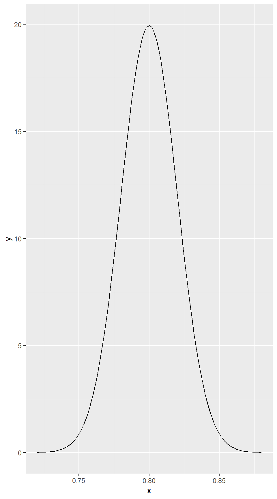
6.2 Confidence Interval for a Single Proportion
Confidence Interval for a Single Proportion
Example 6.3
p.hat <- 52/100; p.hat ## [1] 0.52SE <- sqrt(p.hat * (1 - p.hat) / 100); SE # est. SE## [1] 0.04995998p.hat - 1.96 * SE # lower end of CI ## [1] 0.4220784p.hat + 1.96 * SE # upper end of CI## [1] 0.6179216R can automate finding the confidence interval. Notice the correct = FALSE in the second line. The default for the proportion test includes a continuity correction for more accurate results. You can perform the test without the correction for answers closer to the ones in the textbook.
confint(prop.test(52, 100))## p lower upper level
## 1 0.52 0.4183183 0.6201278 0.95confint(prop.test(52, 100, correct = FALSE))## p lower upper level
## 1 0.52 0.4231658 0.6153545 0.95Example 6.4
p.hat <- 0.28; p.hat ## [1] 0.28SE <- sqrt(p.hat * (1 - p.hat) / 800); SE # est. SE## [1] 0.01587451p.hat - 1.96 * SE # lower end of CI ## [1] 0.248886p.hat + 1.96 * SE # upper end of CI## [1] 0.311114confint(prop.test(224, 800)) # 224 = 0.28 * 800## p lower upper level
## 1 0.28 0.2493936 0.3127512 0.95p.hat <- 0.82; p.hat ## [1] 0.82SE <- sqrt(p.hat * (1 - p.hat) / 800); SE # est. SE## [1] 0.01358308p.hat - 1.96 * SE # lower end of CI ## [1] 0.7933772p.hat + 1.96 * SE # upper end of CI## [1] 0.8466228confint(prop.test(656, 800)) # 656 = 0.82 * 800## p lower upper level
## 1 0.82 0.7912104 0.8456596 0.95Determining Sample Size for Estimating a Proportion
Example 6.5
z.star <- qnorm(0.995); z.star # critical value for 99<!-- confidence -->## [1] 2.575829p.hat <- 0.28; p.hat ## [1] 0.28n <- ((z.star / 0.01)^2) * p.hat * (1 - p.hat); n ## [1] 13375.95Example 6.6
z.star <- qnorm(0.975); z.star # critical value for 95<!-- confidence -->## [1] 1.959964p.hat <- 0.5; p.hat ## [1] 0.5n <- ((z.star / 0.03)^2) * p.hat * (1 - p.hat); n ## [1] 1067.0726.3 Test for a Single Proportion
Example 6.7
\(H_0\): \(p = 0.20\)
\(H_a\): \(p < 0.20\)
Test statistic: \(\hat p = 0.19\) (the sample approval rating)
Test for a single proportion:
p.hat <- 0.19; p.hat## [1] 0.19p <- 0.20; p## [1] 0.2p * 1013 # check >= 10## [1] 202.6(1 - p) * 1013 # check >= 10## [1] 810.4SE <- sqrt(p * (1 - p) / 1013); SE## [1] 0.01256768z <- (p.hat - p) / SE; z## [1] -0.7956915pnorm(z)## [1] 0.2131057Again, R can automate the test for us.
prop.test(192, 1013, alt = "less", p = 0.20) # 192 = 0.19 * 1013##
## 1-sample proportions test with continuity correction
##
## data: 192 out of 1013
## X-squared = 0.62938, df = 1, p-value = 0.2138
## alternative hypothesis: true p is less than 0.2
## 95 percent confidence interval:
## 0.0000000 0.2111204
## sample estimates:
## p
## 0.189536Notice the “less” for the alternative hypothesis because this is a lower tail alternative.
Example 6.8
p.hat <- 66/119; p.hat## [1] 0.5546218p <- 1/3; p## [1] 0.3333333p * 119 # check >= 10## [1] 39.66667(1 - p) * 119 # check >= 10## [1] 79.33333SE <- sqrt(p * (1 - p) / 119); SE## [1] 0.04321358z <- (p.hat - p) / SE; z## [1] 5.120809pnorm(z) # large side (rounded)## [1] 0.99999981 - pnorm(z) # small side (less rounding)## [1] 1.521135e-072 * (1 - pnorm(z)) # p-value = 2 * small side## [1] 3.04227e-07prop.test(66, 119, p = 1/3)##
## 1-sample proportions test with continuity correction
##
## data: 66 out of 119
## X-squared = 25.236, df = 1, p-value = 5.072e-07
## alternative hypothesis: true p is not equal to 0.3333333
## 95 percent confidence interval:
## 0.4608610 0.6448083
## sample estimates:
## p
## 0.5546218Example 6.9
p.hat <- 8/9; p.hat## [1] 0.8888889p <- 0.5; p## [1] 0.5p * 9 # check >= 10## [1] 4.5Randomization <- do(1000) * rflip(9, 0.5)
head(Randomization, 3)## n heads tails prop
## 1 9 4 5 0.4444444
## 2 9 5 4 0.5555556
## 3 9 4 5 0.4444444prop( ~ (prop >= p.hat), data = Randomization)## prop_TRUE
## 0.0246.4 Distribution of a Sample Mean
Computing the Standard Error
Example 6.10
SE <- 32000 / sqrt(100); SE## [1] 3200SE <- 32000 / sqrt(400); SE## [1] 1600How Large a Sample Size is Needed?
Figure 6.6
n1 <- do(100) * mean( ~ Time, data = resample(CommuteAtlanta, 1))
gf_dhistogram( ~ mean, bins = 8, data = n1)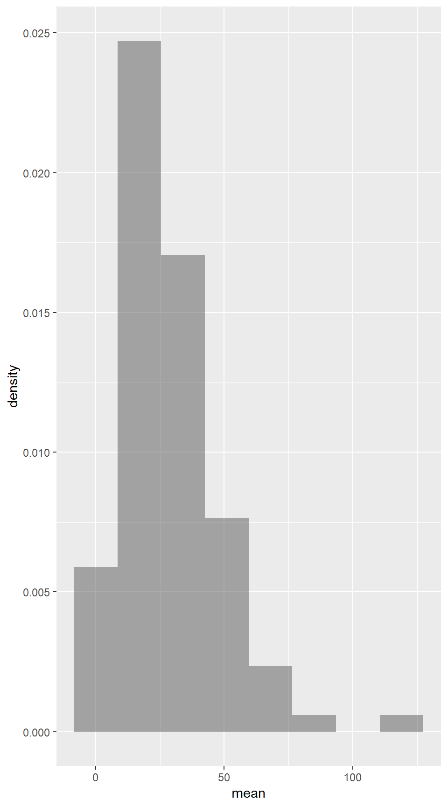
n5 <- do(100) * mean( ~ Time, data = resample(CommuteAtlanta, 5))
gf_dhistogram( ~ mean, bins = 8, data = n5)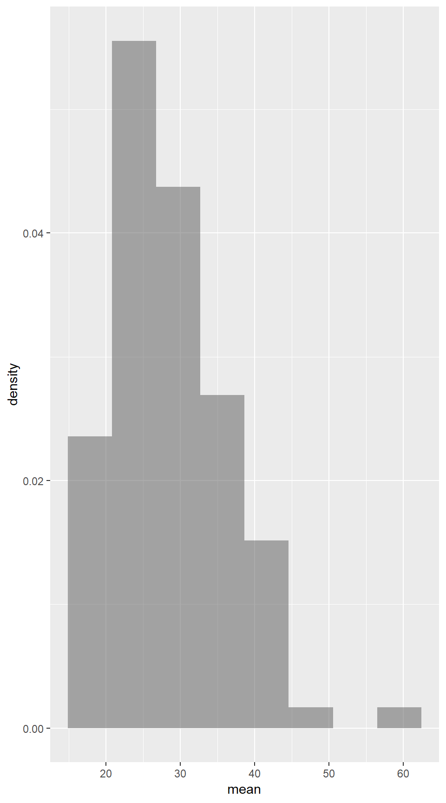
n15 <- do(100) * mean( ~ Time, data = resample(CommuteAtlanta, 15))
gf_dhistogram( ~ mean, bins = 8, data = n15)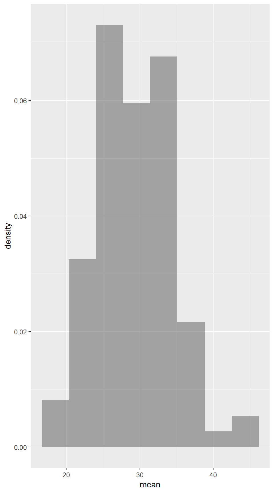
n30 <- do(100) * mean( ~ Time, data = resample(CommuteAtlanta, 30))
gf_dhistogram( ~ mean, bins = 8, data = n30)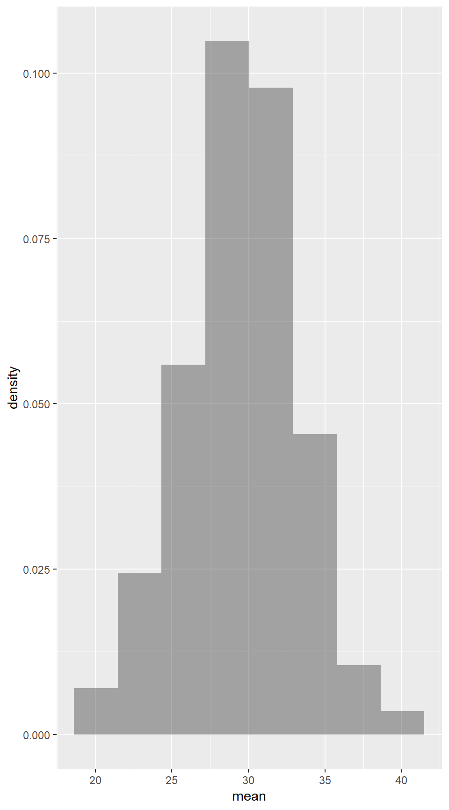
n125 <- do(100) * mean( ~ Time, data = resample(CommuteAtlanta, 125))
gf_dhistogram( ~ mean, bins = 8, data = n125)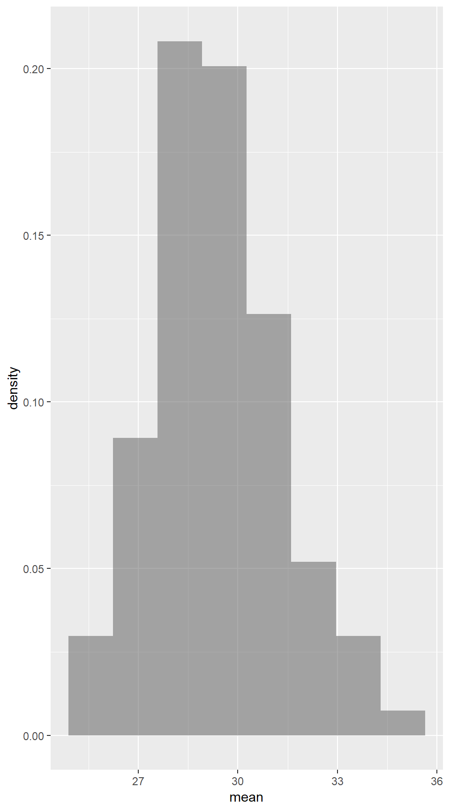
n500 <- do(100) * mean( ~ Time, data = resample(CommuteAtlanta, 500))
gf_dhistogram( ~ mean, bins = 8, data = n500)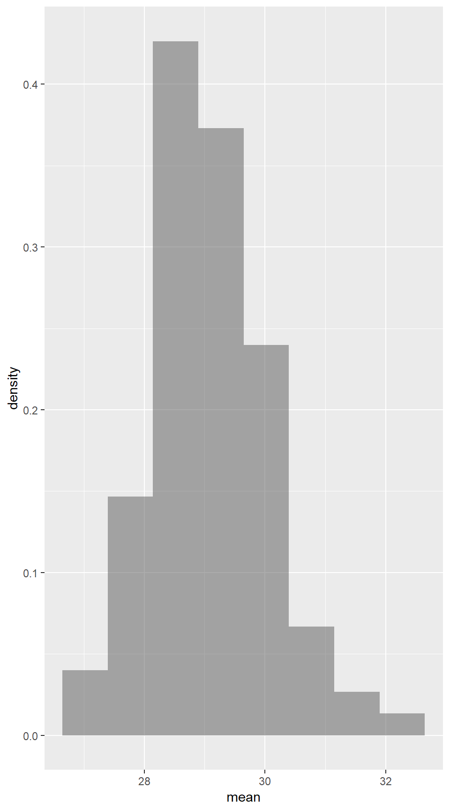
The t-Distribution
If we are working with one quantitative variable, we can compute confidence intervals and p-values using the following standard error formula: \[ SE = \frac{\sigma}{ \sqrt{n}} \] Once again, there is a small problem: we won’t know \(\sigma\). So we will estimate \(\sigma\) using our data: \[ \displaystyle SE \approx \frac{s}{\sqrt{n}} \] Unfortunately, the distribution of \[ \frac{\mean x - \mu}{ s/\sqrt{n}} \] does not have a normal distribution. Instead the distribution is a bit ``shorter and fatter" than the normal distribution. The correct distribution is called the t-distribution with \(n-1\) degrees of freedom. All t-distributions are symmetric and centered at zero. The smaller the degrees of freedom, the shorter and fatter the t-distribution.
Example 6.11
df <- 50 - 1; df## [1] 49SE <- 10.5 / sqrt (50); SE## [1] 1.484924df <- 8 - 1; df## [1] 7SE <- 1.25 / sqrt (8); SE## [1] 0.4419417Figure 6.8
gf_fun(dnorm(x, 0, 1) ~x, xlim = c(-4, 4), colour = "black") %>%
gf_fun(dt(x, df = 15) ~x, xlim = c(-4, 4), colour = 'green') %>%
gf_fun(dt(x, df = 5) ~x, xlim = c(-4, 4), colour = "red")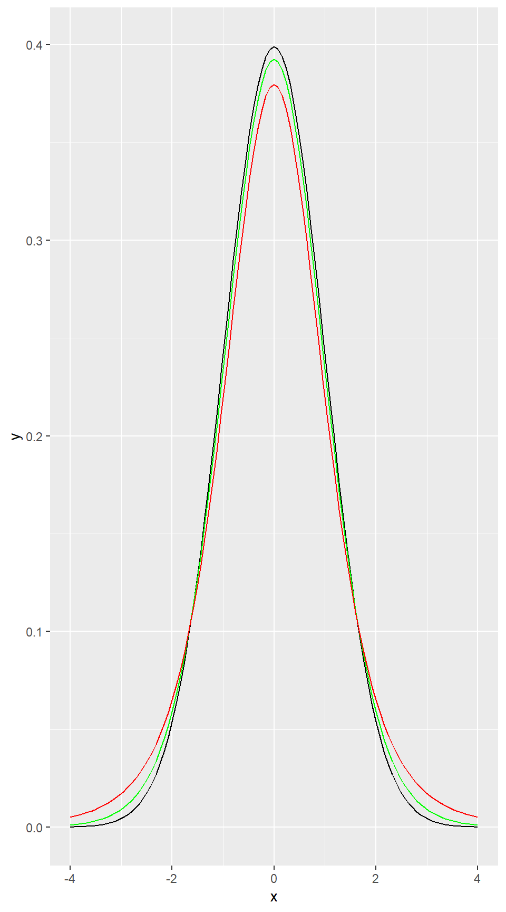
Example 6.12
qt(.975, df = 15)## [1] 2.13145pt(1.5, df = 15, lower.tail = FALSE)## [1] 0.07718333Similar to the normal distribution, the function for t-distribution is set to find probability of the lower tail.
qnorm(.975)## [1] 1.959964pnorm(1.5, lower.tail = FALSE)## [1] 0.0668072Figure 6.9
gf_fun(dt(x, df = 15) ~x, xlim = c(-4, 4)) %>%
gf_vline(xintercept = ~c(2.131,-2.131))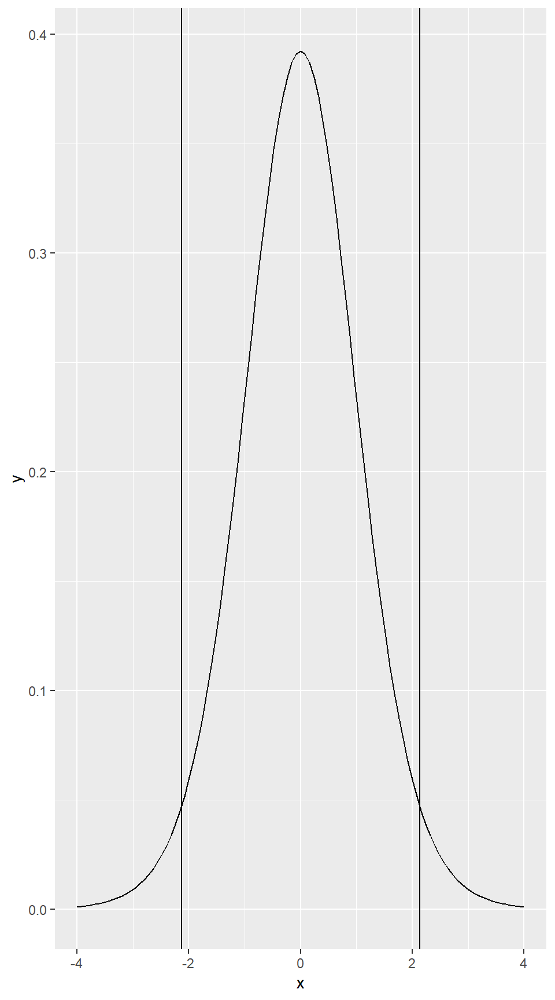
gf_fun(dt(x, df = 15) ~x, xlim = c(-4, 4)) %>%
gf_vline(xintercept = 1.5)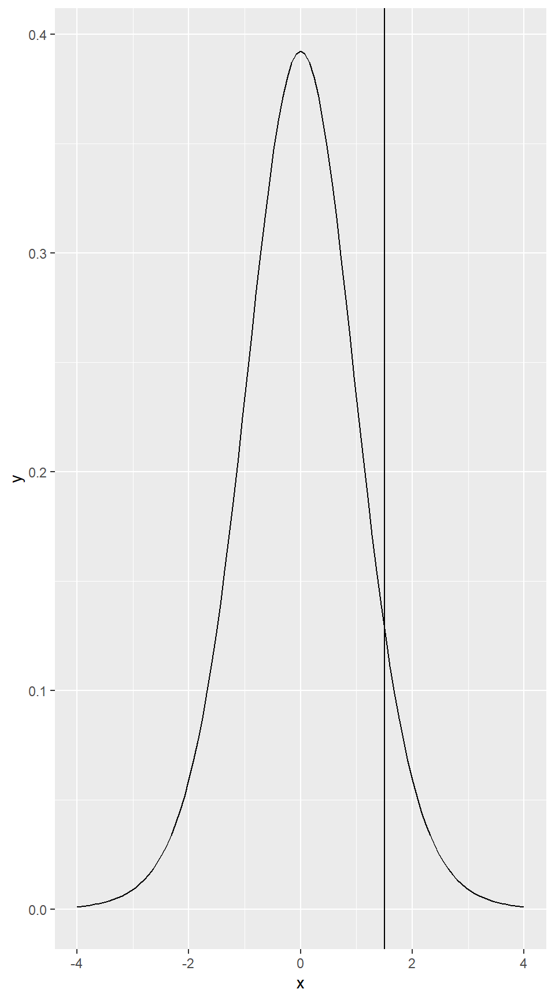
6.5 Confidence Interval for a Mean Using the t-Distribution
Confidence Interval for a Mean Using the t-Distribution
Example 6.13
head(Flight179, 3)## Date Flight179 Flight180 MDY
## 1 01/05/2010 368 308 2010-01-05
## 2 01/15/2010 370 292 2010-01-15
## 3 01/25/2010 354 290 2010-01-25gf_dotplot(~Flight179, binwidth = 12, dotsize = 0.3, data = Flight179) #to check for normality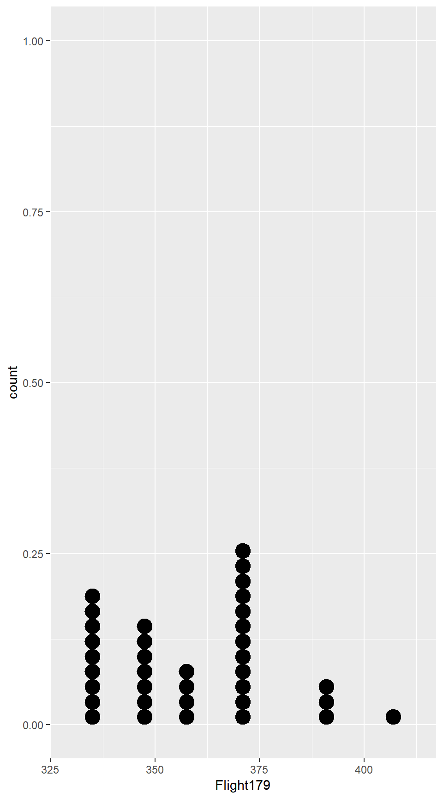
RStudio can do all of the calculations for you if you give it the raw data:
favstats(~Flight179, data = Flight179)## min Q1 median Q3 max mean sd n missing
## 330 341.5 358.5 370.25 407 357.8611 20.178 36 0t.test(~Flight179, data = Flight179)##
## One Sample t-test
##
## data: Flight179
## t = 106.41, df = 35, p-value < 2.2e-16
## alternative hypothesis: true mean is not equal to 0
## 95 percent confidence interval:
## 351.0339 364.6884
## sample estimates:
## mean of x
## 357.8611You can also zoom in just the information you want:
confint(t.test(~Flight179, data = Flight179))## mean of x lower upper level
## 1 357.8611 351.0339 364.6884 0.95Example 6.14
head(CommuteAtlanta, 3)## City Age Distance Time Sex
## 1 Atlanta 19 10 15 M
## 2 Atlanta 55 45 60 M
## 3 Atlanta 48 12 45 Mgf_dens(~Time, data = CommuteAtlanta) # to check for normality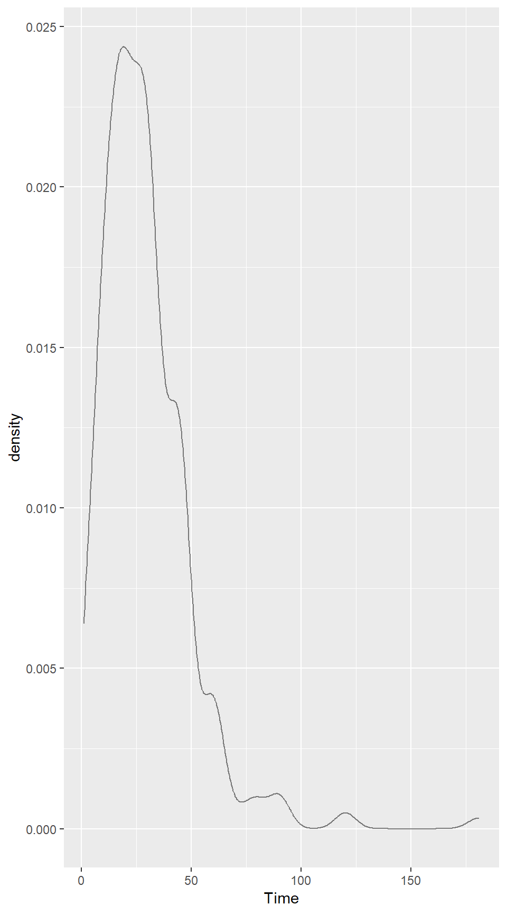
favstats(~Time, data = CommuteAtlanta)## min Q1 median Q3 max mean sd n missing
## 1 15 25 40 181 29.11 20.71831 500 0confint(t.test(~Time, conf.level = 0.99, data = CommuteAtlanta))## mean of x lower upper level
## 1 29.11 26.7142 31.5058 0.99confint(t.test(~Time, conf.level = 0.95, data = CommuteAtlanta))## mean of x lower upper level
## 1 29.11 27.28958 30.93042 0.95head(ManhattanApartments, 3)## Rent
## 1 2275
## 2 5495
## 3 2250gf_dotplot(~Rent, binwidth = 200, dotsize = 1, data = ManhattanApartments) # to check for normality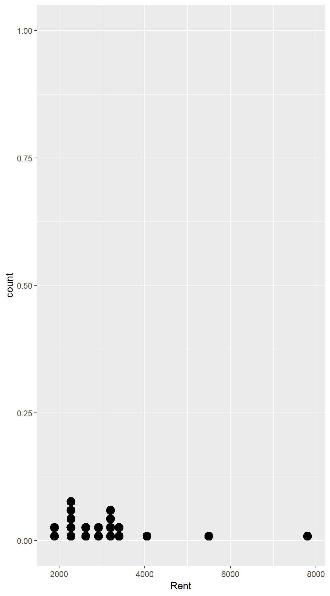
Boot.Rent <- do(1000) * mean( ~ Rent, data = resample(ManhattanApartments))
head(Boot.Rent, 3)## mean
## 1 2805.65
## 2 3203.75
## 3 3054.70favstats( ~ mean, data = Boot.Rent)## min Q1 median Q3 max mean sd n missing
## 2480.95 2925.438 3130.7 3356.75 4407 3155.592 307.5631 1000 0cdata( ~ mean, 0.95, data = Boot.Rent)## low hi central.p
## 2637.925 3807.081 0.950Determining Sample Size for Estimating a Mean
Example 6.16
n <- (1.96 * 20.18 / 2) ^ 2; n## [1] 391.1066.6 Test for a Single Mean
Example 6.17
head(BodyTemp50)## BodyTemp Pulse Gender Sex
## 1 97.6 69 0 Female
## 2 99.4 77 1 Male
## 3 99.0 75 0 Female
## 4 98.8 84 1 Male
## 5 98.0 71 0 Female
## 6 98.9 76 1 Malegf_dotplot(~BodyTemp, dotsize = 1, binwidth = .1, stackratio = 2, data = BodyTemp50) # to check for normality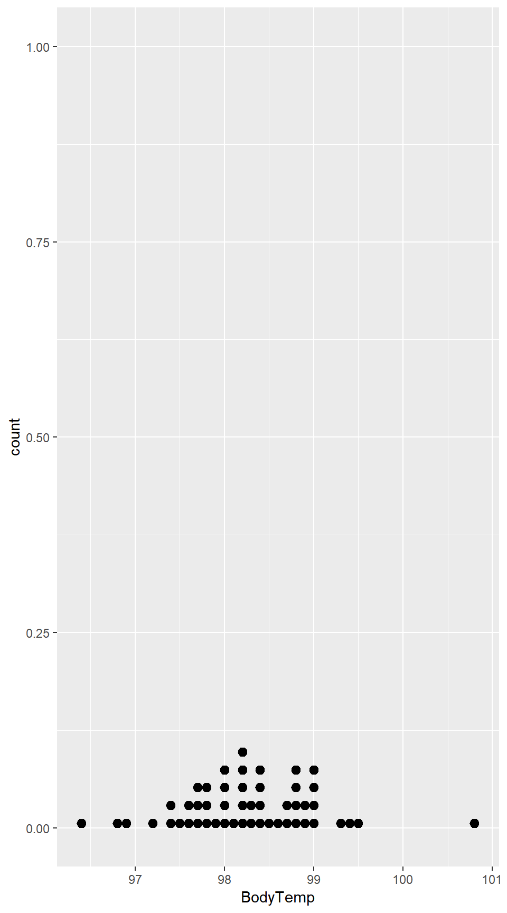
favstats(~BodyTemp, data = BodyTemp50)## min Q1 median Q3 max mean sd n missing
## 96.4 97.8 98.2 98.8 100.8 98.26 0.7653197 50 0t.test(~BodyTemp, mu = 98.6, data = BodyTemp50)##
## One Sample t-test
##
## data: BodyTemp
## t = -3.1414, df = 49, p-value = 0.002851
## alternative hypothesis: true mean is not equal to 98.6
## 95 percent confidence interval:
## 98.0425 98.4775
## sample estimates:
## mean of x
## 98.26pval(t.test(~BodyTemp, mu = 98.6, data = BodyTemp50)) # to find the p-value directly## p.value
## 0.002850509Figure 6.17
plotFun(dt(x, df = 49) ~x, x.lim = c(-4, 4))
plotDist("t", params = list(df=49), type = c("h","l"), groups = (-3.14 < x & x < 3.14), lty = 1)
ladd(grid.text("3.14",3,.05, default.units = "native", hjust = 0))
gf_fun(dt(x, df = 49) ~x, xlim = c(-4, 4)) %>%
gf_vline(xintercept = ~c(-3.14, 3.14))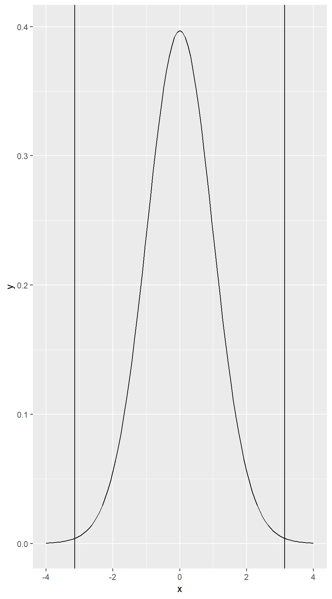
Example 6.18
head(FloridaLakes, 3)## ID Lake Alkalinity pH Calcium Chlorophyll AvgMercury NumSamples
## 1 1 Alligator 5.9 6.1 3.0 0.7 1.23 5
## 2 2 Annie 3.5 5.1 1.9 3.2 1.33 7
## 3 3 Apopka 116.0 9.1 44.1 128.3 0.04 6
## MinMercury MaxMercury ThreeYrStdMercury AgeData
## 1 0.85 1.43 1.53 1
## 2 0.92 1.90 1.33 0
## 3 0.04 0.06 0.04 0gf_dens(~Alkalinity, data = FloridaLakes) # to check for normality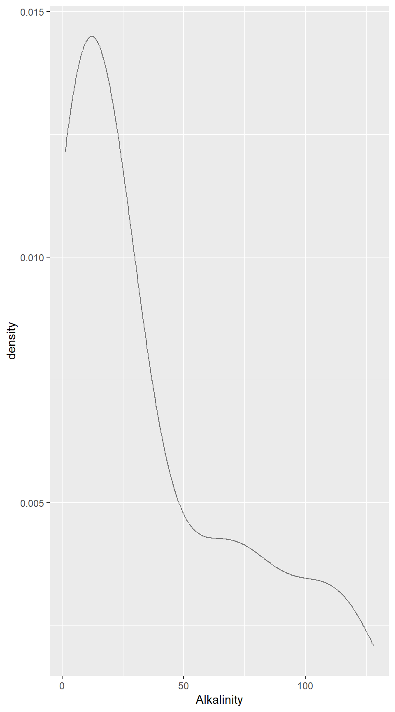
favstats(~Alkalinity, data = FloridaLakes)## min Q1 median Q3 max mean sd n missing
## 1.2 6.6 19.6 66.5 128 37.53019 38.20353 53 0t.test(~Alkalinity, alt = "greater", mu = 35, data = FloridaLakes)##
## One Sample t-test
##
## data: Alkalinity
## t = 0.48216, df = 52, p-value = 0.3159
## alternative hypothesis: true mean is greater than 35
## 95 percent confidence interval:
## 28.74199 Inf
## sample estimates:
## mean of x
## 37.53019Notice the “greater” for the alternative hypothesis.
6.7 Distribution of Differences in Proportions
Example 6.19
OneTrueLove <- read.file("OneTrueLove.csv")## Reading data with read.csv()head(OneTrueLove)## Gender Response
## 1 Male Agree
## 2 Male Agree
## 3 Male Agree
## 4 Male Agree
## 5 Male Agree
## 6 Male Agreetally(Response~Gender, format = "count", margins = TRUE, data = OneTrueLove)## Gender
## Response Female Male
## Agree 363 372
## Disagree 1005 807
## Don't know 44 34
## Total 1412 1213prop(Response~Gender, data = OneTrueLove)## prop_Agree.Female prop_Agree.Male
## 0.2570822 0.3066777diff(prop(Response~Gender, data = OneTrueLove))## prop_Agree.Male
## 0.04959551Figure 6.20
Boot.Love <- do(5000)*diff(prop(Response~Gender, data = resample(OneTrueLove)))
head(Boot.Love, 3)## prop_Agree.Male
## 1 0.04828110
## 2 0.04628336
## 3 0.05902359gf_dhistogram(~ prop_Agree.Male, data = Boot.Love) %>%
gf_fitdistr()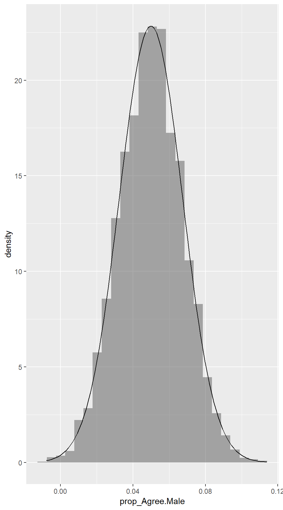
Example 6.20
SE <- sqrt(0.257*(1-0.257)/1412 + 0.307*(1-0.307)/1213); SE## [1] 0.017624616.8 Confidence Interval for a Difference in Proportions
Data 6.3
success <- c(158, 109)
n <- c(444,922)Example 6.21
success <- c(158, 109)
n <- c(444,922)
prop.test(success, n, conf.level = 0.90)##
## 2-sample test for equality of proportions with continuity
## correction
##
## data: success out of n
## X-squared = 106.11, df = 1, p-value < 2.2e-16
## alternative hypothesis: two.sided
## 90 percent confidence interval:
## 0.1947026 0.2805666
## sample estimates:
## prop 1 prop 2
## 0.3558559 0.11822136.9 Test For a Difference in Proportions
Data 6.4
SplitSteal <- rbind(
do(187) * data.frame(agegroup = "Under40", decision = "Split"),
do(195) * data.frame(agegroup = "Under40", decision = "Steal"),
do(116) * data.frame(agegroup = "Over40", decision = "Split"),
do(76) * data.frame(agegroup = "Over40", decision = "Steal")
)Example 6.22
prop(decision~agegroup, data = SplitSteal) # sample prop within each group## prop_Split.Under40 prop_Split.Over40
## 0.4895288 0.6041667prop(~decision, data = SplitSteal) # pooled proportion## prop_Split
## 0.5278746Example 6.23
diff <- diff(prop(decision~agegroup, data = SplitSteal)); diff## prop_Split.Over40
## 0.1146379prop.test(decision~agegroup, data = SplitSteal)##
## 2-sample test for equality of proportions with continuity
## correction
##
## data: tally(decision ~ agegroup)
## X-squared = 6.2857, df = 1, p-value = 0.01217
## alternative hypothesis: two.sided
## 95 percent confidence interval:
## -0.20397777 -0.02529797
## sample estimates:
## prop 1 prop 2
## 0.4895288 0.60416676.10 Distribution of Differences in Means
Figure 6.21
BootE <- do(2000) * diff(mean(Exercise~Gender, data = resample(ExerciseHours)))
head(BootE, 3)## M
## 1 4.681818
## 2 3.493056
## 3 5.560000gf_dhistogram(~M, binwidth = .5, data = BootE) %>%
gf_fitdistr()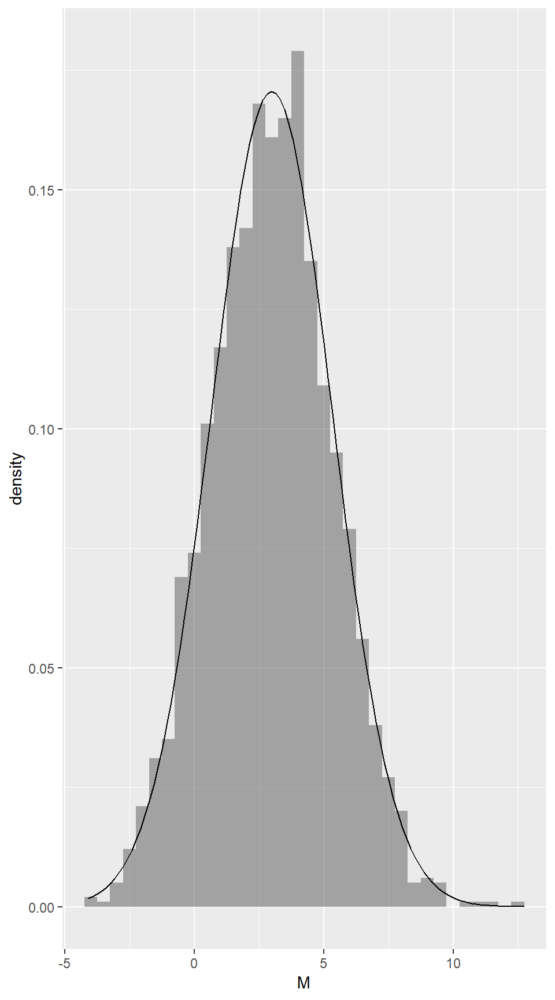
Random.Smiles <- do(2000) * diff(mean(Leniency ~ shuffle(Group), data = Smiles))
head(Random.Smiles, 3)## smile
## 1 -0.08823529
## 2 0.20588235
## 3 -0.11764706gf_dhistogram(~smile, bins = 24, data = Random.Smiles) %>%
gf_fitdistr()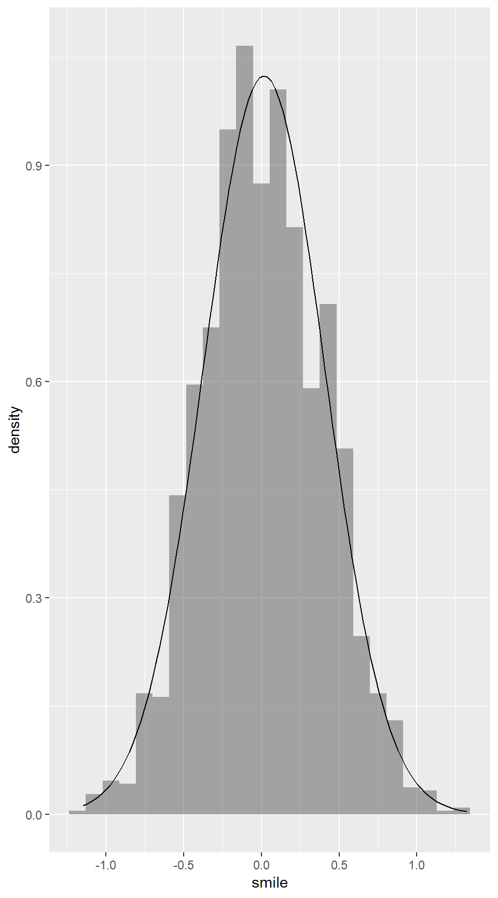
The t-Distribution
Example 6.24
favstats(Exercise~Gender, data = ExerciseHours)## Gender min Q1 median Q3 max mean sd n missing
## 1 F 0 3 10 12.00 34 9.4 7.407359 30 0
## 2 M 2 3 12 19.25 30 12.4 8.798325 20 0SE <- sqrt(8.80^2/20 + 7.41^2/30); SE## [1] 2.387943favstats(Leniency~Group, data = Smiles)## Group min Q1 median Q3 max mean sd n missing
## 1 neutral 2.0 3.0 4.00 4.875 8 4.117647 1.522850 34 0
## 2 smile 2.5 3.5 4.75 5.875 9 4.911765 1.680866 34 0SE <- sqrt(1.68^2/34 + 1.52^2/34); SE## [1] 0.38854186.11 Confidence Interval for a Difference in Means
Example 6.26
head(CommuteStLouis)## City Age Distance Time Sex
## 1 St. Louis 52 10 20 M
## 2 St. Louis 21 35 40 F
## 3 St. Louis 23 40 45 F
## 4 St. Louis 38 0 2 M
## 5 St. Louis 26 15 25 M
## 6 St. Louis 46 7 12 Mfavstats(~Time, data = CommuteStLouis)## min Q1 median Q3 max mean sd n missing
## 1 11.5 20 30 130 21.97 14.23244 500 0favstats(~Time, data = CommuteAtlanta)## min Q1 median Q3 max mean sd n missing
## 1 15 25 40 181 29.11 20.71831 500 0gf_boxplot(Time ~ ", x = ", xlim = c(0, 200), data = CommuteAtlanta) %>%
gf_refine(coord_flip()) # to check for normality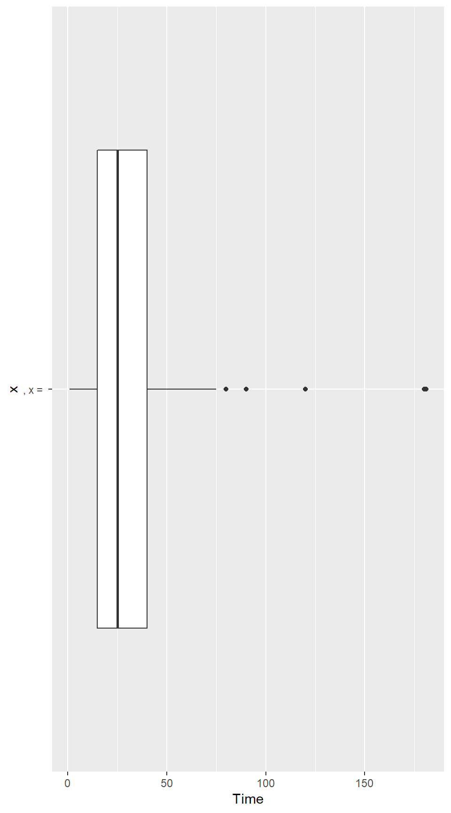
gf_boxplot(Time ~ ", x = ", xlim = c(0, 200), data = CommuteStLouis) %>%
gf_refine(coord_flip()) # to check for normality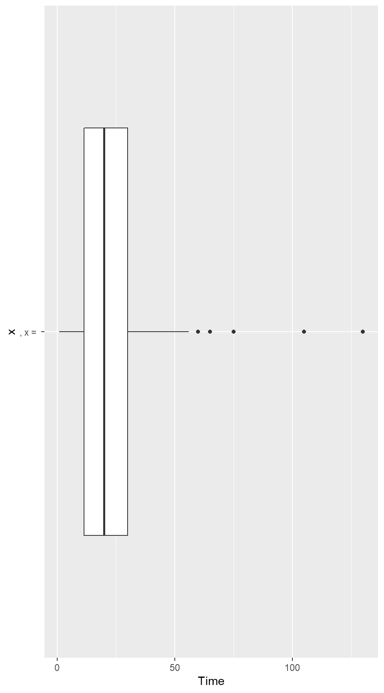
confint(t.test(CommuteAtlanta$Time, CommuteStLouis$Time, conf.level = 0.90))## mean of x mean of y lower upper level
## 1 29.11 21.97 5.289066 8.990934 0.96.12 Test for a Difference in Means
Example 6.27
head(Smiles, 3)## Leniency Group
## 1 7 smile
## 2 3 smile
## 3 6 smilegf_boxplot(Leniency~Group, data = Smiles) %>%
gf_refine(coord_flip()) # to check for normality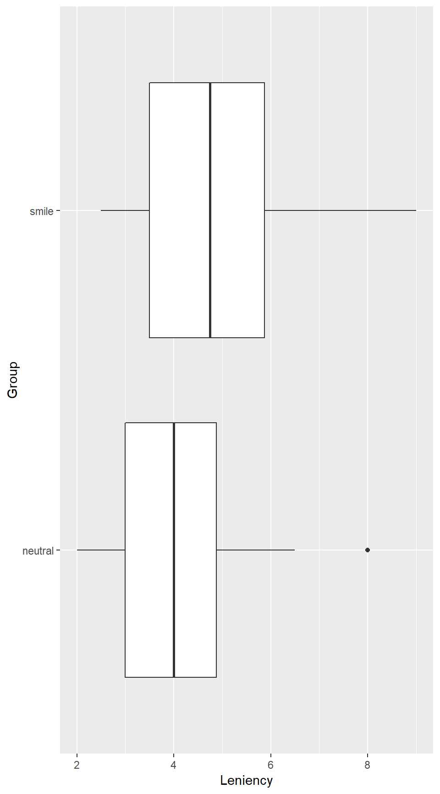
t.test(Leniency~Group, alt = "less", data = Smiles)##
## Welch Two Sample t-test
##
## data: Leniency by Group
## t = -2.0415, df = 65.367, p-value = 0.02262
## alternative hypothesis: true difference in means is less than 0
## 95 percent confidence interval:
## -Inf -0.1451043
## sample estimates:
## mean in group neutral mean in group smile
## 4.117647 4.9117656.13 Paired Difference in Means
Example 6.28
head(Wetsuits, 3)## Wetsuit NoWetsuit Gender Type Sex
## 1 1.57 1.49 F swimmer Female
## 2 1.47 1.37 F triathlete Female
## 3 1.42 1.35 F swimmer Femalegf_dotplot(~ Wetsuit, xlim = c(1.1, 1.8), binwidth = .04, dotsize = .8, data = Wetsuits) # to check for normality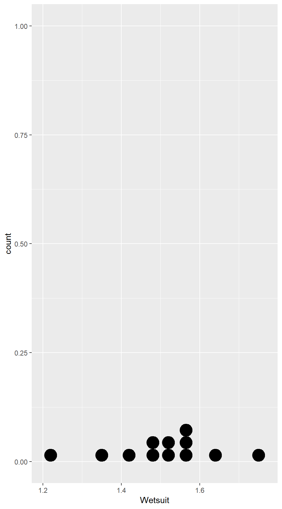
gf_dotplot(~ NoWetsuit, xlim = c(1.1, 1.8), binwidth = .04, dotsize = .8, data = Wetsuits) # to check for normality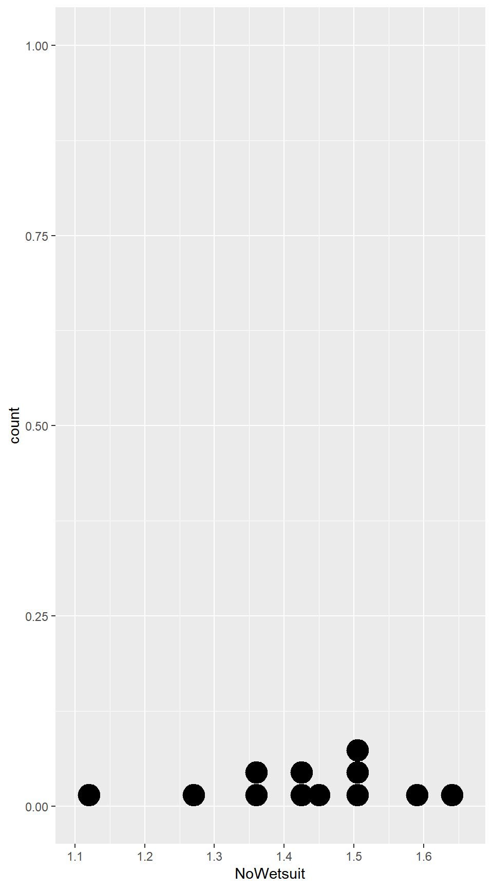
t.test(Wetsuits$Wetsuit, Wetsuits$NoWetsuit)##
## Welch Two Sample t-test
##
## data: Wetsuits$Wetsuit and Wetsuits$NoWetsuit
## t = 1.3688, df = 21.974, p-value = 0.1849
## alternative hypothesis: true difference in means is not equal to 0
## 95 percent confidence interval:
## -0.03992937 0.19492937
## sample estimates:
## mean of x mean of y
## 1.506667 1.429167Example 6.29
head(Wetsuits, 3)## Wetsuit NoWetsuit Gender Type Sex
## 1 1.57 1.49 F swimmer Female
## 2 1.47 1.37 F triathlete Female
## 3 1.42 1.35 F swimmer Femalet.test(Wetsuits$Wetsuit, Wetsuits$NoWetsuit, paired = TRUE)##
## Paired t-test
##
## data: Wetsuits$Wetsuit and Wetsuits$NoWetsuit
## t = 12.318, df = 11, p-value = 8.885e-08
## alternative hypothesis: true difference in means is not equal to 0
## 95 percent confidence interval:
## 0.06365244 0.09134756
## sample estimates:
## mean of the differences
## 0.0775gf_dotplot(~(Wetsuit - NoWetsuit), binwidth = .01, dotsize = .4, data = Wetsuits)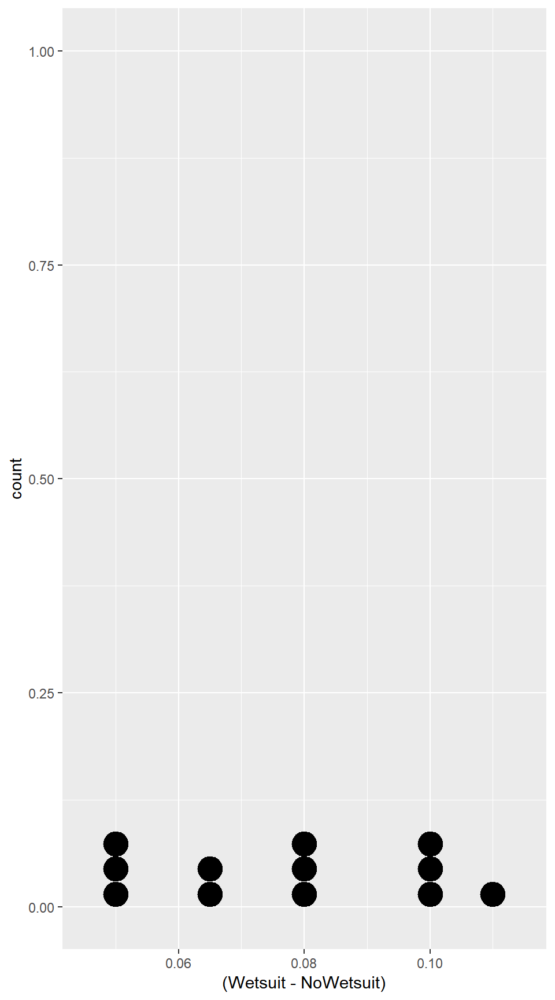
Example 6.30
confint(t.test(Wetsuits$Wetsuit, Wetsuits$NoWetsuit, paired = TRUE))## mean of the differences lower upper level
## 1 0.0775 0.06365244 0.09134756 0.95confint(t.test( ~ (Wetsuit - NoWetsuit), data = Wetsuits))## mean of x lower upper level
## 1 0.0775 0.06365244 0.09134756 0.95